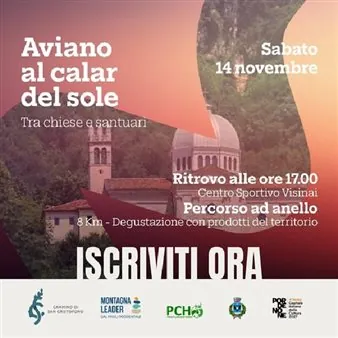

sab 14 nov · dalle 17:00
Aviano al calar del sole
Aviano...tra Chiese e Santuari al calar del sole. Quando il giorno si fa più dolce e le colline di Aviano si tingono d’oro, è il momento di mettersi in cammino. Sabato 14 novembre si terrà un’escursione crepuscolare lungo i sentieri che collegano San Giorgio al Santuario della…
 Indicazioni
Indicazioni
- Costi e prenotazioni
- Costo non indicato · Prenotazione non indicata
- Programma
- Programma da verificare. Apri la fonte ufficiale per orari e possibili aggiornamenti.
- In caso di maltempo
- Nessuna indicazione specifica pubblicata.
- Note
- Acquisito automaticamente dalla fonte.
L’EVENTO
Descrizione completa
Aviano...tra Chiese e Santuari al calar del sole.
Quando il giorno si fa più dolce e le colline di Aviano si tingono d’oro, è il momento di mettersi in cammino.
Sabato 14 novembre si terrà un’escursione crepuscolare lungo i sentieri che collegano San Giorgio al Santuario della Madonna di Costa. Un percorso tra natura, racconti antichi e luoghi che custodiscono secoli di storia e spiritualità.
All’arrivo ci aspetta una piccola degustazione di prodotti del territorio, prima di ripartire sotto il cielo stellato per il rientro.
Ritrovo: alle ore 17.00 – Centro Sportivo Visinai di Aviano
Percorso: 8 km, 300 m di dislivello – difficoltà facile-media
Rientro previsto: ore 21.00 circa
Costo: €20. Per i minorenni la partecipazione è gratuita.
Cosa portare: abbigliamento a strati, calzature con suola scolpita e pila frontale. Bastoncini consigliati.
Saremo accompagnati dalle nostre guide GAE Giorgio Zampieri e Chiara Aviani.
Iscriviti qui: https://forms.gle/4FAQxgWX8Vkhh79w8
L’iniziativa è realizzata in collaborazione con Guide Prealpi Cansiglio Hiking e il Comune di Aviano.
IL PROGRAMMA
Programma e orari
Appuntamenti raccolti dalle fonti elencate. Dove manca un orario, non è ancora disponibile in questa scheda.
Programma pubblicato
- Dal 2026-11-14 al 2026-11-14
INFORMAZIONI UTILI
Prima di partire
- Controllare la fonte prima di partire.
ORGANIZZAZIONE